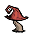
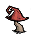
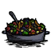
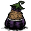

Red Mushrooms during Daytime
The different Mushrooms There are three different types of Mushrooms.
Red Mushrooms during Daytime
Red Mushrooms can be found in Grassland or Forest biomes and can be easily identified by their red cap. They are only harvestable during Daytime, during night and dusk they will bury themselves underground.
"sunken" Mushrooms
A buried mushroom cannot be harvested like normal but it can be dug up using the Shovel. Digging up a buried mushroom will produce 2 Caps of the respective mushroom but it will also prevent more mushrooms from growing. If not dug up, a mushroom will regrow shortly after the next Rain.

Green Mushrooms during Dusk

Blue Mushrooms during Night
Mushtrees are organisms that can only be found in Caves. Mushtrees are, as their name indicates, a mixture between Mushrooms and Trees. Unlike "normal" mushrooms, Mushtrees cannot be picked or dug up, they have to be chopped down with an Axe. Upon being chopped they will drop the respective loot depending on which kind of Mushtree it was. Just like the mushrooms there are three types of Mushtreees. Red Mushtree, Green Mushtree, and Blue Mushtree. When a Mushtree is set on fire, it will burn to a crisp and then disappear dropping one Ash and one Charcoal. In addition to that all mushtrees provide light.
After being being chopped down the Red Mushtree will drop one Log and one Red Cap.
After being chopped down the Green Mushtree will drop one Log and one Green Cap.
The Blue Mushtree is the biggest Mushtree and will drop two logs and one Blue Cap.
|
Mushtrees in-game | |
|---|---|
Each mushroom has a negative effect on sanity, amounts depend on if it is cooked or uncooked.
| Red Cap / Cooked Red Cap | ||||||||||||||||||||||||||||
|
   |
| | |  |
|
|  | |  |
 |
| | |  |
 |
| | |  |
Note: You can use any type of mushroom uncooked and cooked for the recipes above.
| Green Mushroom | ||||||||||||||||||||||||||||
|
| Blue Mushroom | ||||||||||||||||||||||||||||
|
You should think twice before digging a mushroom. Was eliminating the mushroom spawner forever worth the two caps? You should only make use of this option when it's unavoidable or you're in need of the particular mushroom
| Game Guides | |
| Basic | Getting Started • All About Night |
| Camping | Base Camp • Frog Pond Camp • Self-sustaining Settlement • Marsh Camp • Camping Underground |
| Farming | Gold Nugget Farm • Renewable Farming • Woodie's Curse • Farming • Nightmare Fuel Farming |
| Survival | Adventure Mode • Mob Killing • How To not starve • How to survive • Hound Wave Survival • Mushroom Guide • Spelunking Guide • Winter Guide • Crock Pot Dishes • Teleportato Rush Guide • Panic Room Guide • Just Spawned • Advanced World • World vs Caves |
| Technical | Excrement Extraction Guide • Physical Damage Absorbtion • Console Commands |
| Characters | Wendy • Wolfgang • Wickerbottom's Books |


{kind=link}
{kind=link}
{kind=link}
{kind=link}